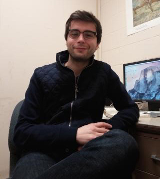
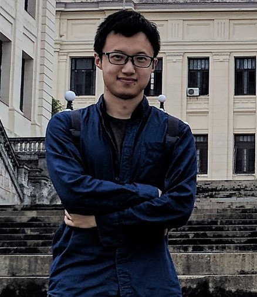

Affiliated Faculty
-

Dr. Ernesto Calvo
Dr. Ernesto Calvo is a Professor and Associate Chair of the Department of Government and Politics (GVPT) at University of Maryland, College Park. Ernesto is also the author of Legislator Success in Fragmented Congresses in Argentina (Cambridge U.P: 2014), Anatomía Política de Twitter en Argentina (Capital Intelactual, 2015), and La nueva política de Partidos (Prometeo: 2005). His work has been published in the American Journal of Political Science, the Journal of Politics, World Politics, The British Journal of Political Science and other major journals from Latin America, Europe, and the United States. His research has been recognized with the Lawrence Longley Award and the Leubbert Best Article Award from the Representation and the Comparative Politics sections of the American Political Science Association.
Personal Homepage -

Dr. Jóhanna Birnir
Dr. Jóhanna Birnir is a Professor in the department of Government and Politics and the director of the All Minorities at Risk project (AMAR). Jóhanna studies the effect of identity (ethnicity, religion, gender) on contentious political outcomes (elections and violence) and has done extensive fieldwork in the Andes and in South-East Europe. Jóhanna’s first book "Ethnic Electoral Politics" (Cambridge University Press) examines the relationship between political access and minority strategic choice of peaceful electoral participation, protest or violence against the state. Her current book project (under contract with Cambridge University Press and supported by the Global Religion Research Initiative - University of Notre Dame) examines the relationship between identity (ethnicity and religion) and minority peaceful and violent political mobilization.
Personal Homepage -

Dr. David M. Waguespack
Dr. David M. Waguespack is Associate Professor of Management & Organization at the Robert H. Smith School of Business at the University of Maryland. Dr. Waguespack received his Ph.D. in Political Science, focusing on environmental politics and science and technology policy. Prior to arriving at Maryland, he was a project manager at the University of California Los Angeles, and an adjunct political science professor at SUNY Buffalo. Dr. Waguespack 's research focuses on non-market influences, such as social networks and political institutions, on innovation and venture performance. His ongoing work pursues these questions in the domains of film production and distribution, internet technology development, international patenting, and environmental management.
Graduate Students
-
Tiago Ventura
Tiago Ventura is a third year Ph.D. Student in Political Science at the University of Maryland, College Park. He holds a Master degree in Political Science from the State University of Rio de Janeiro. His primary substantive interests are political violence, crime and wealth inequality in Brazil. Methodologically, Tiago research is focused on social networks, computational methods and bayesian inference. Tiago works as research assistant for the iLCSS
Personal Homepage -

Joan Timoneda
Joan Timoneda am a fifth year Ph.D. Student in Political Science at the University of Maryland, College Park. He studies comparative political economy with a particular interest in regime change, authoritarianism, and democratic backsliding. His political methodology research focuses on issues with big data, network analysis and statistical models using TSCS data.
Personal Homepage -
Analia Gomez Vidal
Analia Gomez Vidal is the Coordinator for CIDCM and the Program Coordinator for MIDCM since Fall 2014. She is currently a PhD Candidate in the Department of Government and Politics at University of Maryland, College Park. Her current topics of interest include political economy, women in politics, social network analysis, and experimental design. Her dissertation explores the gendered politics of the workplace in Latin America. -
Trey Billing
Trey Billing is a PhD candidate focusing on the political economy of development. His work is forthcoming in the Journal of Conflict Resolution and Political Research Quarterly and is working on a dissertation project that explores the how politics influences the demand for foreign aid projects in Africa.
Personal Homepage -
Neil Lund
Neil is a PhD student studying political science at the University of Maryland. His primary areas of interest are social movements, interest groups, and the role of social media in protest. His dissertation research focuses on the interactions between migrants, advocates, and political parties in shaping the debate around immigrants and refugees. More broadly, he is interested in examining strategies used by politically powerless groups to gain leverage over the state. His methodological interests are in automated event detection, text analysis, and in combining social media and newspaper-based event data. -

Xiaonan Wang
Xiaonan Wang is a third-year Ph.D. Student in Political Science at the University of Maryland. He studies comparative politics and political methodology with focuses on issues in Chinese politics and political economy